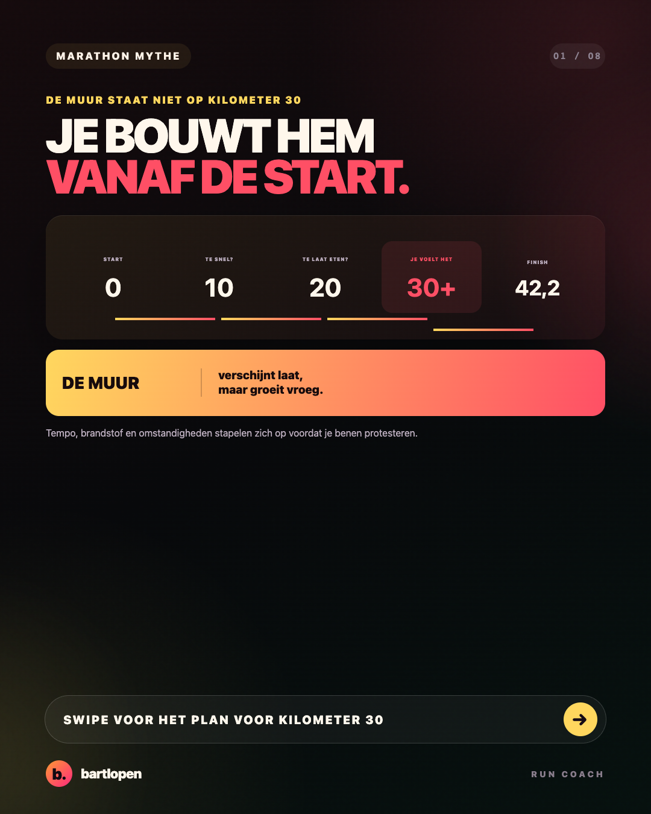
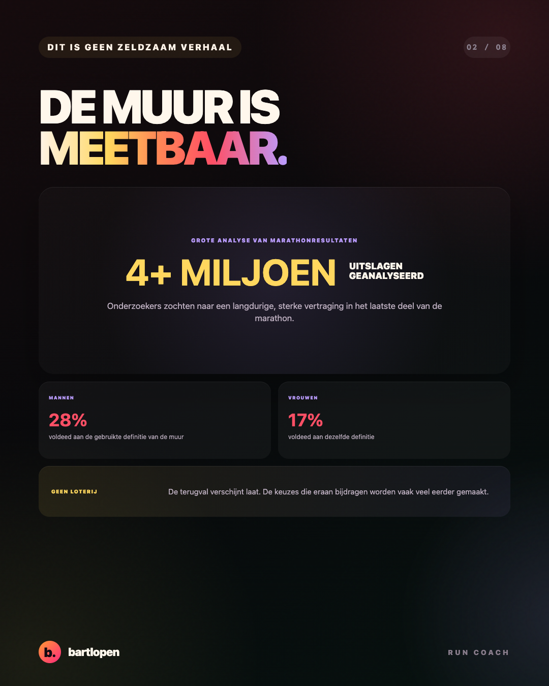
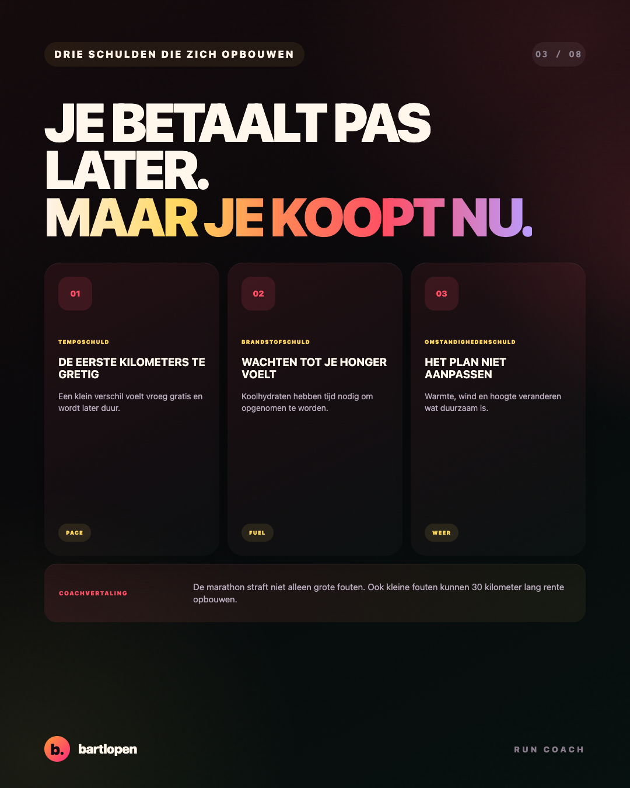
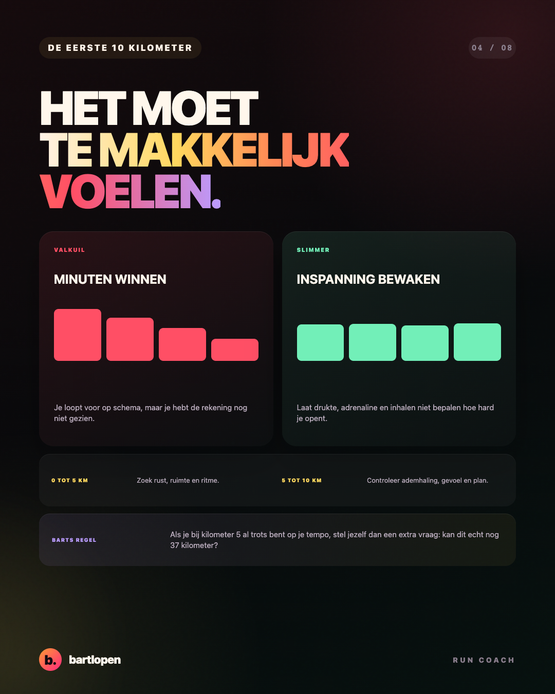
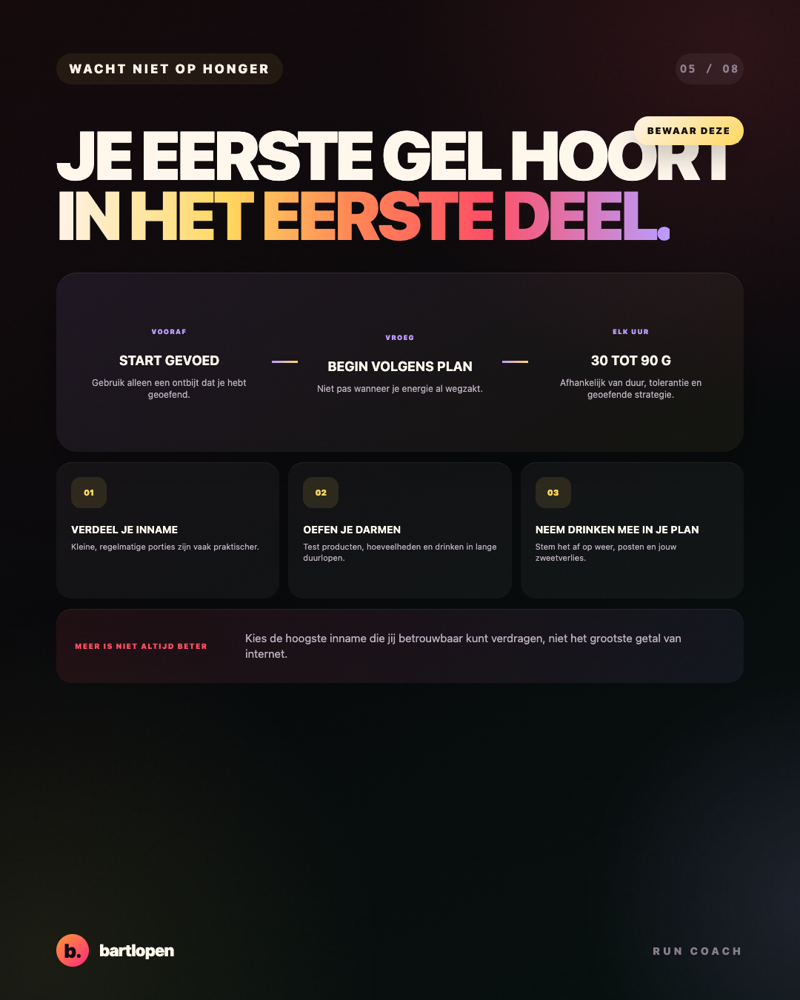
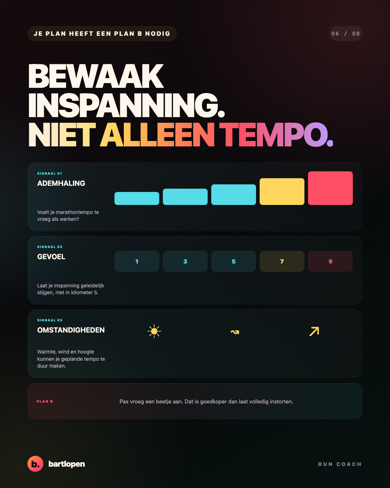
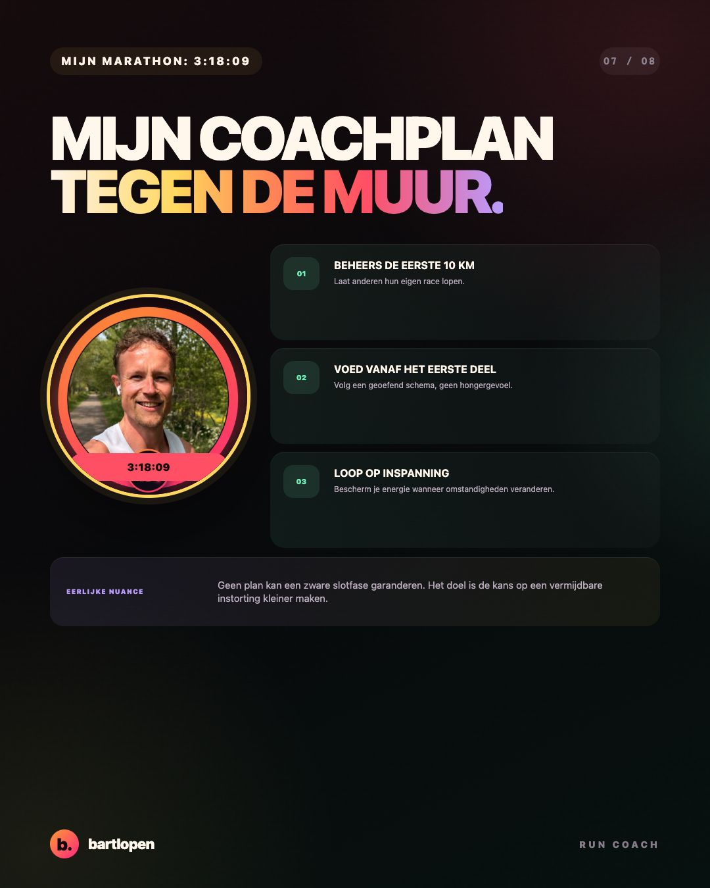
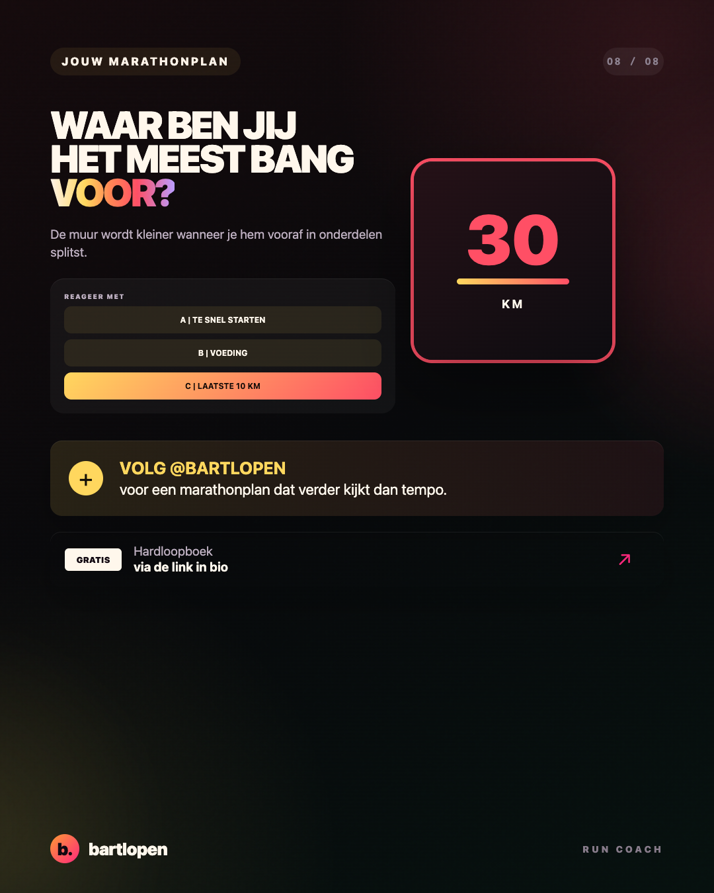

SLIDE 01 ↗Je bouwt de muur
vanaf de start
Acht praktische slides over tempo, voeding en inspanning voordat kilometer 30 de rekening presenteert.

SLIDE 02 ↗
SLIDE 03 ↗
SLIDE 04 ↗
SLIDE 05 ↗
SLIDE 06 ↗
SLIDE 07 ↗
SLIDE 08 ↗Caption
DE MARATHONMUUR BEGINT NIET OP KILOMETER 30. 🧱 Je voelt hem daar misschien pas. Maar vaak bouw je hem al veel eerder. Een iets te snelle opening, wachten met koolhydraten tot je honger hebt en vasthouden aan tempo terwijl warmte of wind de inspanning verhogen. Los lijken het kleine keuzes. Na dertig kilometer kunnen ze samen een flinke rekening vormen. Mijn drie verdedigingslijnen: 🧠 beheers de eerste 10 kilometer ⚡ begin vroeg met je geoefende voedingsplan 🎯 bewaak inspanning, niet alleen tempo Voor lange wedstrijden wordt vaak 30 tot 90 gram koolhydraten per uur geadviseerd, afhankelijk van de duur en wat jij hebt getraind. Het hoogste getal is niet automatisch jouw beste getal. Je darmen moeten het ook betrouwbaar kunnen verwerken. Mijn coachregel vanuit mijn marathon van 3:18:09: als kilometer 5 al voelt als presteren, loop je waarschijnlijk de verkeerde wedstrijd. Waar ben jij het meest bang voor: A te snel starten, B voeding of C de laatste 10 kilometer? 👇 #marathon #marathontraining #hardlopen #sportvoeding #pacing #runningtips #bartlopen
Bronnen: een analyse van meer dan vier miljoen marathonresultaten, een systematische review over marathonpacing, het IOC-advies over koolhydraten tijdens langdurige inspanning en een systematische review over darmtraining.